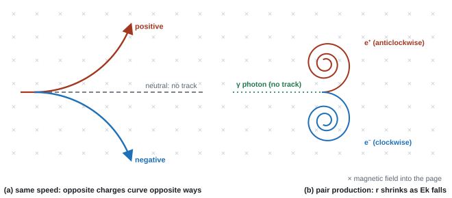

Nuclear & Particle Physics
What is everything made of? A century ago the answer was "atoms"; then it was "electrons, protons and neutrons"; now it is quarks and leptons. Each step came from firing particles at other particles, harder and harder, and reading the tracks that came out. This page follows that story: alpha scattering, electron beams, accelerators, detectors, and the conservation laws that decide which particle reactions can happen.
Spec111Nucleon number and proton number
Understand what nucleon number (mass number) and proton number (atomic number) mean.
Nuclide notation
A nucleus of element X is written AZX, for example 23892U.
| Symbol | Name | Meaning |
|---|---|---|
| A (top) | nucleon number (mass number) | total number of protons + neutrons |
| Z (bottom) | proton number (atomic number) | number of protons; fixes which element it is |
| N = A − Z | neutron number | number of neutrons |
- Uranium-238: 92 protons, 238 − 92 = 146 neutrons. A neutral atom also has 92 electrons.
- Isotopes have the same Z but different A (same number of protons, different numbers of neutrons), e.g. 11H, 21H, 31H.
- An ion has gained or lost electrons; its nucleus, and so A and Z, are unchanged.
- Particle symbols in this notation: proton 11p, neutron 10n, electron 0−1e, positron 0+1e, alpha 42He.
Balancing nuclear equations
Both totals must match on each side: the top numbers (nucleon number) and the bottom numbers (charge).
balancing equations
Alpha decay of radon-222: 22286Rn → 21884Po + 42He. Top: 222 = 218 + 4 ✓; bottom: 86 = 84 + 2 ✓.
An alpha particle hitting beryllium: 42He + 94Be → 126C + 10n. Top: 4 + 9 = 12 + 1 ✓; bottom: 2 + 4 = 6 + 0 ✓.
Often asked as: MCQ counting protons and neutrons from the symbol (e.g. A = 24, Z = 10 → 14 neutrons); completing a nuclear equation.
Swapping proton and neutron numbers: every MCQ has the reversed pair as a distractor.
Reading "nucleon number" as "neutron number". Nucleons are protons and neutrons.
Spec112Alpha scattering and the nuclear model of the atom
Understand how large-angle alpha-particle scattering gave evidence for a nuclear atom, and how ideas about atomic structure have changed.
The experiment (Geiger and Marsden, explained by Rutherford, 1909–1911)
- A narrow beam of alpha particles was aimed at a very thin gold foil in an evacuated chamber.
- A detector (originally a zinc sulfide screen viewed through a microscope, giving tiny flashes) was moved round the foil to count alpha particles at each scattering angle.
| Observation | Conclusion |
|---|---|
| Most alpha particles went straight through, undeflected | the atom is mostly empty space |
| Some were deflected through small angles | there is a concentration of (positive) charge that repels the alphas |
| A very few (about 1 in 8000) were deflected by more than 90°, some straight back | the positive charge and most of the mass are concentrated in a tiny region: the nucleus |
- The count rate falls very steeply as the scattering angle increases.
Why the plum-pudding model failed
Thomson's model (1904) spread positive charge and mass evenly through the atom, with electrons dotted in it. That diffuse charge could only produce small deflections. Only a small, dense, charged nucleus can produce a force strong enough to turn an alpha particle back.
Details of the set-up
- Vacuum: so alpha particles are not absorbed or scattered by air molecules (their range in air is only a few cm).
- Thin foil: so each alpha is scattered by one nucleus at most (no multiple deflections) and is not absorbed.
- Gold: can be hammered extremely thin; its large nuclear charge (79e) gives big deflections.
- Alpha particles, not beta or gamma: beta particles are much less massive and are deflected by the atomic electrons; gamma rays are uncharged, so no electrostatic deflection. Both are also too penetrating.
How the model of the atom changed
| Date | Model | Key idea |
|---|---|---|
| ~1800 | Dalton | atoms are tiny indivisible spheres |
| 1897–1904 | Thomson | discovered the electron; plum-pudding model |
| 1911 | Rutherford | small, dense, positive nucleus; electrons outside |
| 1913 | Bohr | electrons in fixed energy levels (explains line spectra) |
| 1932 | Chadwick | discovered the neutron, inside the nucleus |
| 1960s–70s | high-energy electron scattering | protons and neutrons are made of quarks |
An alpha particle with kinetic energy 5.0 MeV is fired directly at a gold nucleus (Z = 79). Calculate its distance of closest approach. What does this tell you about the size of the gold nucleus?
Show solution
At the closest point the alpha stops for an instant, so all its kinetic energy has become electric potential energy: \(E_k = \dfrac{Q_1 Q_2}{4\pi\varepsilon_0 r}\).
\(E_k = 5.0 \times 1.60\times10^{-13} = 8.0\times10^{-13}\ \text{J}\), \(Q_1 = 79e\), \(Q_2 = 2e\):
\[ r = \frac{8.99\times10^{9} \times (79 \times 1.60\times10^{-19}) \times (2 \times 1.60\times10^{-19})}{8.0\times10^{-13}} = 4.5\times10^{-14}\ \text{m} \]The alpha never touched the nucleus, so the radius of a gold nucleus must be less than about \(4.5\times10^{-14}\) m. (It is actually about \(7\times10^{-15}\) m.)
The six-mark answer pairs each observation with its conclusion:
- "most went straight through (undeviated), so the atom is mostly empty space"
- "a few deflected through small angles, so there is a concentration of charge"
- "very few deflected by more than 90°, so most of the mass is concentrated in a very small region (nucleus)"
- plum-pudding "predicted only small deflections"; the new model has "a very small nucleus containing almost all the mass and charged".
"Thin foil so alpha particles are less likely to undergo multiple deflections" or "less likely to be absorbed".
Often asked as: 6-mark description and significance; why vacuum, thin foil, gold; why not beta or gamma; MCQ on which statement was not a conclusion.
Writing "deflected through angles less than 90°" for the large-angle evidence. It is more than 90°.
Listing observations without the conclusion each supports.
Saying "the nucleus contains protons and neutrons" was a conclusion. Neutrons were not discovered until 1932.
"Reflected off the nucleus": say repelled by the positive nucleus.
Examined in past papers even though the spec doesn't list it.
- Closest approach gives an upper limit for the nuclear radius: set the alpha's kinetic energy equal to the electrical potential energy, Ek = (2e)(79e)/4πε₀r (see 98; WPH14 Jun 2022, Oct 2023).
- Momentum in scattering: an alpha bouncing off a light nucleus (or proton) is a 2-D collision problem (WPH14 Jun 2023).
Spec113Thermionic emission and accelerating electrons
Electrons are released by thermionic emission and can be accelerated by electric and magnetic fields.
Thermionic emission
- A metal filament (or cathode) is heated by passing a current through it.
- Some of the free (conduction) electrons gain enough energy to escape from the metal surface. This is thermionic emission.
- It must happen in a vacuum, so the electrons do not collide with gas molecules.
- A hotter filament (bigger heater current or heater p.d.) emits more electrons per second, giving a larger beam current.
Accelerating them: the electron gun
- A positive anode near the cathode creates an electric field that accelerates the electrons. Many pass through a hole in the anode as a beam.
- The work done on each electron by the accelerating p.d. V becomes kinetic energy:
Accelerating electrons
- e = 1.60 × 10⁻¹⁹ C, V = accelerating p.d. (V), m = 9.11 × 10⁻³¹ kg, v = final speed (m s⁻¹).
- A larger anode p.d. gives a faster beam; it does not change how many electrons are emitted.
- A magnetic field cannot change the electrons' speed: its force is perpendicular to their velocity, so it only changes their direction (steering and focusing beams, or bending them into circles).
speed from an electron gun
Electrons are accelerated through 2.0 kV.
Ek = eV = 1.60 × 10⁻¹⁹ × 2.0 × 10³ = 3.2 × 10⁻¹⁶ J
v = √(2Ek/m) = √(2 × 3.2 × 10⁻¹⁶ ÷ 9.11 × 10⁻³¹) = 2.7 × 10⁷ m s⁻¹
That is 9% of c, so the non-relativistic formula is still fine.
Electrons are emitted from a hot cathode and accelerated through a p.d. of 2.0 kV. Calculate their kinetic energy in joules and their speed.
Show solution
\(E_k = eV = 1.60\times10^{-19} \times 2.0\times10^{3} = 3.2\times10^{-16}\ \text{J}\) (that is 2.0 keV)
\(v = \sqrt{\dfrac{2E_k}{m}} = \sqrt{\dfrac{2 \times 3.2\times10^{-16}}{9.11\times10^{-31}}} = 2.7\times10^{7}\ \text{m s}^{-1}\), about 9% of the speed of light. At much higher p.d.s this simple equation stops working because the speed cannot exceed \(c\).
- Two marks: "the (metal) filament is heated (by the current)" and "the electrons are released by thermionic emission" (or "electrons gain enough energy to leave the surface").
- DO NOT accept "thermal effect".
- "Use of Ek = QV" and "use of Ek = ½mv²"; some questions require at least 3 s.f.
Often asked as: name and describe the emission; speed of electrons from a given p.d.; MCQ on how to increase the beam current.
Not naming thermionic emission, or not saying what is heated.
Saying the accelerating p.d. increases the number of electrons emitted.
Thinking a magnetic field can speed electrons up.
Spec114Particle accelerators and detectors
Understand the roles of electric and magnetic fields in linear accelerators, cyclotrons and particle detectors (ionisation and deflection only).
The linear accelerator (linac)
- A line of hollow metal drift tubes, connected alternately to the two terminals of a high-frequency alternating p.d. of constant frequency, all inside a vacuum.
- Particles are accelerated by the electric field in the gaps between tubes.
- Inside a tube there is no electric field (the tube shields it), so the particle drifts at constant speed.
- The p.d. reverses while the particle is inside a tube, so when it reaches the next gap the field there is again in the accelerating direction.
- The time spent in each tube is the same (half a period of the a.c.), but the particle gets faster, so each tube must be longer than the last (length = v × T/2).
- For electrons close to the speed of light the speed hardly increases any more, so the tubes stop getting longer (the energy still increases).
drift-tube length
A proton moving at 2.0 × 10⁶ m s⁻¹ enters a tube; the a.c. frequency is 25 MHz.
Time in the tube = T/2 = 1 ÷ (2 × 25 × 10⁶) = 2.0 × 10⁻⁸ s
Length = vt = 2.0 × 10⁶ × 2.0 × 10⁻⁸ = 0.040 m
The cyclotron
- Two hollow D-shaped electrodes (dees) in a vacuum, with a uniform magnetic field perpendicular to the dees and an alternating p.d. across the gap between them.
- Electric field (in the gap only): accelerates the particles each time they cross the gap.
- Magnetic field: exerts a force perpendicular to the velocity, which provides the centripetal force, so inside each dee the particle moves in a semicircle (no change of speed).
- After each crossing the particle is faster, so the radius (r = mv/BQ) is bigger: the path is an outward spiral. It leaves at the edge.
- Time for a semicircle: T/2 = πm/BQ. This does not depend on speed or radius, so the p.d. can switch at a constant frequency f = BQ/2πm, reversing while the particle is inside a dee.
- At speeds approaching c the particle takes longer per revolution (a relativistic effect), falls out of step with the p.d., and the cyclotron stops working.
a proton cyclotron
B = 0.80 T, dee radius 0.40 m, proton.
Period T = 2πm/BQ = 2π × 1.67 × 10⁻²⁷ ÷ (0.80 × 1.60 × 10⁻¹⁹) = 8.2 × 10⁻⁸ s, so f = 1/T = 12 MHz
Exit speed: v = BQr/m = 0.80 × 1.60 × 10⁻¹⁹ × 0.40 ÷ 1.67 × 10⁻²⁷ = 3.1 × 10⁷ m s⁻¹
Ek = ½mv² = 7.8 × 10⁻¹³ J = 4.9 MeV
With 20 kV across the gap, each crossing adds 20 keV, so about 245 crossings, or 123 turns (two crossings per turn).
Detectors
- Ionisation: a fast charged particle knocks electrons out of atoms along its path. The ions are made visible as a track (droplets in a cloud chamber, bubbles in a bubble chamber) or detected as electrical signals (wire and spark chambers, semiconductor detectors).
- Neutral particles do not ionise, so they leave no track. Their presence is inferred (e.g. from a gap, or from missing momentum).
- Deflection: a magnetic field across the detector bends the tracks. The direction of bending gives the sign of the charge; the radius gives the momentum (r = p/BQ).
- Heavily ionising particles (alphas, slow particles) leave thick, short tracks; fast electrons leave thin tracks.
Inside a dee the particle moves in a semicircle of radius \(r\) at speed \(v\). The time to go half way round is:
\[ t_{1/2} = \frac{\pi r}{v} \]The radius is \(r = mv/BQ\) (derived in the next section). Substitute:
\[ t_{1/2} = \frac{\pi}{v}\cdot\frac{mv}{BQ} = \frac{\pi m}{BQ} \]The speed cancels. A faster particle goes round a bigger circle, and the two effects exactly balance.
One cycle of the supply must last two half-turns, so the period is \(2\pi m/BQ\) and the frequency is:
\[ \boxed{f = \frac{BQ}{2\pi m}} \]So a fixed-frequency supply stays in step with the particle on every turn, from the centre to the edge.
A cyclotron for protons has dees of radius 0.50 m in a magnetic field of 1.5 T. Calculate (a) the frequency of the alternating supply and (b) the maximum kinetic energy of the protons, in MeV.
Show solution
(a) \(f = \dfrac{BQ}{2\pi m} = \dfrac{1.5 \times 1.60\times10^{-19}}{2\pi \times 1.67\times10^{-27}} = 2.3\times10^{7}\ \text{Hz}\) (23 MHz)
(b) The largest orbit has \(r = 0.50\) m, so the maximum momentum is \(p = BQr = 1.5 \times 1.60\times10^{-19} \times 0.50 = 1.2\times10^{-19}\ \text{kg m s}^{-1}\).
\(E_k = \dfrac{p^2}{2m} = \dfrac{(1.2\times10^{-19})^2}{2 \times 1.67\times10^{-27}} = 4.3\times10^{-12}\ \text{J} = \dfrac{4.31\times10^{-12}}{1.60\times10^{-13}}\ \text{MeV} = 27\ \text{MeV}\)
Cyclotron (the five points):
- "an electric field (from the p.d.) between the dees accelerates the particles"
- "the magnetic field is perpendicular to the velocity, so the force is perpendicular to the velocity"
- "this provides the centripetal force, so the path in a dee is a semicircle"
- "the p.d. switches polarity when the particle is inside a dee, so it is accelerated each time it crosses the gap"
- "constant frequency, because T = 2πm/BQ is independent of speed and radius"
Linac: "accelerated by the electric field in the gaps", "no field inside the tubes: constant speed", "a.c. of constant frequency, polarity changes while the particle is inside a tube", "time in each tube constant, so tubes get longer as speed increases", "near c the speed is almost constant, so tubes stop getting longer".
Detectors: "only charged particles leave tracks", "tracks formed by ionisation", "radius decreasing means the particle is losing energy".
Often asked as: 6-mark explanation of a linac or cyclotron, or a comparison of the two; cyclotron period, frequency or exit speed; sketch the spiral path; identify neutral particles from gaps in tracks.
Saying the magnetic field accelerates the particles (it only changes their direction).
Saying "the p.d. accelerates them" without mentioning an electric field, or not saying where the field is.
Not saying when the polarity changes.
Using one dee for a whole period: the time in one dee is T/2.
Describing the cyclotron without explaining why the frequency can be constant.
Examined in past papers even though the spec doesn't list it.
- Deriving T = 2πm/BQ from r = p/BQ and v = 2πr/T (WPH14 Jan 2020).
- Counting gap crossings: energy per crossing = QV; two crossings per revolution (WPH14 Jan 2020, Jun 2025).
- Synchrotron radiation: charged particles moving in circles emit radiation and lose energy, so the radius shrinks (WPH14 Jun 2024 MCQ).
Spec115Radius of a charged particle's path: r = p/BQ
Derive and use r = p/BQ for a charged particle moving at right angles to a magnetic field.
Derivation
The magnetic force is perpendicular to the velocity, so it provides the centripetal force:
Charged particle in a magnetic field
A particle of charge \(Q\) moves at speed \(v\) at right angles to a uniform field \(B\). The magnetic force on it is:
\[ F = BQv \]This force is always perpendicular to the velocity, so it provides the centripetal force and the particle moves in a circle.
Set the magnetic force equal to the centripetal force:
\[ BQv = \frac{mv^2}{r} \]Cancel one factor of \(v\) and rearrange for \(r\):
\[ r = \frac{mv}{BQ} \]\(mv\) is the momentum \(p\), so:
\[ \boxed{r = \frac{p}{BQ}} \]A larger momentum gives a larger, less curved track; a stronger field or a larger charge curls it up more tightly.
- r = radius (m), p = momentum (kg m s⁻¹), B = flux density (T), Q = charge (C).
- Faster or heavier particles (more momentum) make bigger circles. Stronger fields or larger charges make smaller circles.
- A particle losing energy (e.g. by ionising) slows down, so its radius decreases: a spiral track.
- The time for one orbit, T = 2πm/BQ, does not depend on the speed.
electron beam in a field
Electrons from a 2.0 kV gun (v = 2.65 × 10⁷ m s⁻¹, from 113) enter a 2.5 mT field at right angles.
p = mv = 9.11 × 10⁻³¹ × 2.65 × 10⁷ = 2.41 × 10⁻²³ kg m s⁻¹
r = p/BQ = 2.41 × 10⁻²³ ÷ (2.5 × 10⁻³ × 1.60 × 10⁻¹⁹) = 0.060 m
an alpha particle
A 5.0 MeV alpha particle (m = 6.64 × 10⁻²⁷ kg, Q = 2e) moves at right angles to a 1.2 T field.
Ek = 5.0 × 10⁶ × 1.60 × 10⁻¹⁹ = 8.0 × 10⁻¹³ J; p = √(2mEk) = √(2 × 6.64 × 10⁻²⁷ × 8.0 × 10⁻¹³) = 1.03 × 10⁻¹⁹ kg m s⁻¹
r = 1.03 × 10⁻¹⁹ ÷ (1.2 × 3.20 × 10⁻¹⁹) = 0.27 m
A proton leaves a circular track of radius 0.25 m in a bubble chamber with a magnetic field of 1.2 T. Calculate its momentum, in SI units and in MeV/c, and its kinetic energy in MeV.
Show solution
\(p = BQr = 1.2 \times 1.60\times10^{-19} \times 0.25 = 4.8\times10^{-20}\ \text{kg m s}^{-1}\)
In MeV/c: \(pc = 4.8\times10^{-20} \times 3.00\times10^{8} = 1.44\times10^{-11}\ \text{J} = 90\ \text{MeV}\), so \(p = 90\ \text{MeV}/c\).
\(E_k = \dfrac{p^2}{2m} = \dfrac{(4.8\times10^{-20})^2}{2 \times 1.67\times10^{-27}} = 6.9\times10^{-13}\ \text{J} = 4.3\ \text{MeV}\). Much less than its rest energy (938 MeV), so the non-relativistic formula is fine.
- Derivation: "equates F = mv²/r and F = BQv", "substitutes p = mv with suitable algebra to arrive at r = p/BQ".
- Track photographs: "determines the radius from measurements", "applies the scale".
- Momentum units: N s or kg m s⁻¹, or GeV/c.
Often asked as: derive r = p/BQ; find B or p from a radius; radius from a photograph with a scale; MCQ (four times the mass, twice the charge, same speed → radius doubles).
Using the diameter as the radius.
Using the electron mass for a proton.
For an alpha particle, using Q = e instead of 2e.
Examined in past papers even though the spec doesn't list it.
- Very fast electrons: p = mv no longer works. Use E = pc (E in J) to get the momentum (WPH14 Jun 2021).
- Mass spectrometer: ions of the same charge and speed but different mass follow circles of different radius, so isotopes separate (WPH14 Oct 2022).
Spec116Conservation laws and particle tracks
Apply conservation of charge, energy and momentum to particle interactions, and interpret particle tracks.
What is conserved in every interaction
- Charge: total charge before = total charge after.
- Energy (mass–energy): total of rest energies + kinetic energies before = total after. Kinetic energy can become mass and mass can become kinetic energy (ΔE = c²Δm).
- Momentum: vector sum before = vector sum after. If a particle at rest decays into two, they fly apart in opposite directions. A momentum vector diagram must close.
Reading a track photograph

| What you see | What it tells you |
|---|---|
| Track curves | particle is charged; curvature direction + field direction (FLHR) → sign of charge |
| Large radius | large momentum (r = p/BQ) |
| Radius shrinks along the track (spiral) | particle is losing energy and slowing; it travels towards the tighter curl |
| Track bends more after passing through a plate | it lost energy in the plate, so it was travelling into the more curved part |
| Tracks appear from nowhere ("V" shape) | a neutral particle (no track) decayed there |
| Two tracks from one point, curving opposite ways | pair production, or decay into opposite charges |
| Track suddenly stops or kinks | the particle decayed (perhaps into neutral particles) or collided |
| Momentum before ≠ sum of visible momenta after | a neutral particle carried the missing momentum |
field direction from a track
A positron moves to the right across the page and curves upwards. Which way is the field?
The positron is positive, so the second finger (current) points right. The thumb (force) points up the page (towards the centre of curvature). The first finger then points into the page: the field is into the page.
An electron in the same place would curve downwards.
- Particle deduction (6-mark style): "rest mass-energy of the incoming particles plus their kinetic energy = total after"; "some of the kinetic energy becomes mass (ΔE = c²Δm)"; "the momentum of the incoming particle equals the vector sum of the products (x-components), and the y-components cancel".
- Momentum diagram: "vectors drawn end to end", "arrows", "three lines form a closed triangle, so momentum is conserved".
- "Radius decreasing, so the particle is slowing / losing energy".
Often asked as: identify a missing (neutral) particle using charge and momentum; deduce field direction or charge sign from curvature; explain why a neutral particle leaves no track; draw a momentum triangle for a decay.
Saying "the curvature decreases" when you mean the radius decreases (curvature increases).
Drawing a momentum triangle with the wrong particle's momentum in it.
Forgetting that neutral particles are invisible, so a gap in the picture can be a real particle.
Examined in past papers even though the spec doesn't list it.
Using the gap at the start of a track, or the order of tracks, to decide which event happened first (WPH14 Oct 2020).
Spec117Why high energies are needed to probe nucleons
Understand why high energies are needed to investigate the structure of nucleons.
The resolution argument
- To see detail of a certain size, you need a probe whose wavelength is about that size or smaller (otherwise it just diffracts around the object).
- Moving particles have a de Broglie wavelength:
de Broglie wavelength
- λ = wavelength (m), h = Planck constant = 6.63 × 10⁻³⁴ J s, p = momentum (kg m s⁻¹).
- A nucleon is about 10⁻¹⁵ m across. To resolve its structure, λ must be about 10⁻¹⁵ m or less, so the probe needs a very large momentum, and so a very high energy.
- Electrons are used as the probe: they are leptons, so they do not feel the strong force, and they are point-like, so they probe the charge inside cleanly.
energy needed
For λ = 1.0 × 10⁻¹⁵ m: p = h/λ = 6.63 × 10⁻³⁴ ÷ 1.0 × 10⁻¹⁵ = 6.6 × 10⁻¹⁹ kg m s⁻¹
These electrons are highly relativistic, so E ≈ pc = 6.63 × 10⁻¹⁹ × 3.00 × 10⁸ = 2.0 × 10⁻¹⁰ J ≈ 1.2 GeV.
(Using ½mv² would give a speed far above c, which is impossible.)
A second, different reason: making new particles
- To create a massive particle, the collision must supply at least its rest energy, mc² (see 118).
- Colliding beams are better than a fixed target: two equal beams head-on have zero total momentum, so the products need not carry momentum or kinetic energy away, and all the energy is available to make new mass. With a fixed target, much of the energy stays as kinetic energy of the products.
- Structure: "high energy → large momentum → small (de Broglie) wavelength", "wavelength comparable to the size of the nucleon (≈10⁻¹⁵ m)", "better resolution".
- Colliding beams: "no resultant momentum before the collision, so the products can have little momentum and kinetic energy, so all the energy is available to form the mass of new particles".
Often asked as: why high energy is needed to probe structure; MCQ where "to create new particles" is the distractor; why colliding beams are used; is the energy enough to make a particle of a given mass.
Answering a "structure" question with E = mc². That explains making particles, not resolving detail.
Not linking all three: energy → momentum → wavelength → resolution.
Examined in past papers even though the spec doesn't list it.
- Electron diffraction shows that electrons behave as waves: "an electron does not always behave as a particle" (WPH14 Jan 2023).
- E = pc for high-energy electrons (WPH14 Jun 2021).
Spec118Creation and annihilation of matter and antimatter
Use ΔE = c²Δm for the creation and annihilation of matter and antimatter particles.
Mass–energy
- ΔE = energy (J), Δm = mass (kg), c = 3.00 × 10⁸ m s⁻¹. Mass and energy are interchangeable.
- Rest energy of a particle = mc² (energy it has because of its mass alone).
Annihilation
- A particle meets its antiparticle: both disappear and their total energy (rest energy + kinetic energy) becomes gamma photons, usually two.
- If they were at rest, total momentum was zero, so the two photons move in opposite directions with equal energies. Each photon then carries the rest energy of one particle: E = mc².
- One photon alone cannot be produced, because it could not have zero momentum.
Pair production
- A high-energy photon turns into a particle–antiparticle pair (e.g. e⁻ and e⁺).
- Minimum photon energy = 2mc² (the rest energy of both particles). Any extra becomes their kinetic energy.
- It happens near a nucleus, which recoils to conserve momentum.
electron–positron annihilation
Rest energy of an electron: E = mc² = 9.11 × 10⁻³¹ × (3.00 × 10⁸)² = 8.20 × 10⁻¹⁴ J = 0.51 MeV.
Each of the two photons has E = 8.20 × 10⁻¹⁴ J, so λ = hc/E = 6.63 × 10⁻³⁴ × 3.00 × 10⁸ ÷ 8.20 × 10⁻¹⁴ = 2.4 × 10⁻¹² m (gamma rays).
pair production
Minimum photon energy for an e⁻e⁺ pair = 2 × 0.511 MeV = 1.02 MeV.
A 1.50 MeV photon makes a pair: kinetic energy shared by the pair = 1.50 − 1.02 = 0.48 MeV.
is there enough energy?
A collision makes 2.9 GeV available. Can it produce a proton–antiproton pair?
Rest energy needed = 2 × 1.67 × 10⁻²⁷ × (3.00 × 10⁸)² = 3.0 × 10⁻¹⁰ J = 1.88 GeV.
1.88 GeV < 2.9 GeV, so yes; the remaining 1.0 GeV becomes kinetic energy.
(a) Calculate the minimum photon energy, in MeV and in J, needed to produce an electron–positron pair, and the wavelength of such a photon. (b) A proton and an antiproton, both at rest, annihilate into two identical photons. Calculate the energy of each photon in GeV.
Show solution
(a) \(E = 2m_ec^2 = 2 \times 9.11\times10^{-31} \times (3.00\times10^{8})^2 = 1.64\times10^{-13}\ \text{J} = 1.02\ \text{MeV}\).
\(\lambda = \dfrac{hc}{E} = \dfrac{6.63\times10^{-34} \times 3.00\times10^{8}}{1.64\times10^{-13}} = 1.2\times10^{-12}\ \text{m}\), a gamma ray.
(b) The total rest energy is \(2 \times 938\ \text{MeV} = 1876\ \text{MeV}\), shared between two photons, so each has \(938\ \text{MeV} = 0.938\ \text{GeV}\).
- "Use of ΔE = c²Δm", "conversion factor for eV", then a comparison with a conclusion: "1.88 GeV < 2.9 GeV so yes".
- Kinetic energy of products = energy available − rest energy of the products.
- Compare energies, not speeds.
Often asked as: mass of a particle in kg or GeV/c²; photon energy or frequency from annihilation or pair production; energy left over as kinetic energy; is a process possible.
Not squaring c, or rearranging m = E/c² wrongly.
Forgetting the "M" (10⁶) or "G" (10⁹).
Forgetting to subtract the rest energy of the products, or to add the initial kinetic energy of the colliding particles.
Giving each annihilation photon the rest energy of both particles.
Examined in past papers even though the spec doesn't list it.
- Finding the photon frequency from E = hf in pair production (WPH14 Jun 2021).
- Comparing a calculated particle mass with a table value as a percentage difference (WPH14 Jun 2025).
Spec119Energy and mass units: MeV, GeV, MeV/c², GeV/c²
Use MeV and GeV for energy and MeV/c², GeV/c² for mass, and convert between these and SI units.
The electronvolt
- 1 eV is the energy gained by an electron accelerated through a p.d. of 1 V: 1 eV = 1.60 × 10⁻¹⁹ J.
- 1 keV = 10³ eV; 1 MeV = 10⁶ eV = 1.60 × 10⁻¹³ J; 1 GeV = 10⁹ eV = 1.60 × 10⁻¹⁰ J.
- eV → J: multiply by 1.60 × 10⁻¹⁹. J → eV: divide.
Mass in MeV/c² and GeV/c²
- From m = E/c², a mass can be quoted as an energy divided by c².
- 1 MeV/c² = 1.60 × 10⁻¹³ J ÷ (3.00 × 10⁸)² = 1.78 × 10⁻³⁰ kg. 1 GeV/c² = 1.78 × 10⁻²⁷ kg.
- Momentum in GeV/c: because GeV/c² × c = GeV/c, "GeV/c" is a unit of momentum.
| Particle | Mass in kg | Mass in MeV/c² |
|---|---|---|
| electron | 9.11 × 10⁻³¹ | 0.511 |
| proton | 1.67 × 10⁻²⁷ | 938 (≈ 0.94 GeV/c²) |
| neutron | 1.67 × 10⁻²⁷ | 940 |
conversions both ways
Proton, kg → MeV/c²: E = mc² = 1.67 × 10⁻²⁷ × (3.00 × 10⁸)² = 1.503 × 10⁻¹⁰ J; ÷ 1.60 × 10⁻¹³ = 939 MeV, so m ≈ 939 MeV/c² (the accepted 938 MeV/c² comes from more precise constants).
Top quark, GeV/c² → kg: 173 GeV = 173 × 10⁹ × 1.60 × 10⁻¹⁹ = 2.77 × 10⁻⁸ J; m = E/c² = 2.77 × 10⁻⁸ ÷ (3.00 × 10⁸)² = 3.08 × 10⁻²⁵ kg.
- "Conversion factor for eV" is its own mark.
- "GeV/c has the same unit as momentum, because GeV/c² × c = GeV/c".
Often asked as: MCQ mass in kg from MeV/c²; identifying GeV s⁻¹ as a unit of power; converting a particle's mass for a comparison.
Neglecting the M or G prefix.
Multiplying by c² when you should divide (E = mc² gives energy from mass; mass = E/c²).
Spec120Relativistic increase in particle lifetime
Understand when the relativistic increase in a particle's lifetime matters (no relativistic equations needed).
The muon puzzle
- Muons are made by cosmic rays hitting the upper atmosphere, about 10 km up. At rest their mean lifetime is about 2.2 µs.
- Even at 0.98c, a muon would travel only s = vt = 0.98 × 3.00 × 10⁸ × 2.2 × 10⁻⁶ ≈ 650 m in that time.
- Yet large numbers of muons reach the ground.
- Explanation: muons are moving close to the speed of light. For an observer on Earth, the muon's lifetime is longer (time dilation), so it travels much further before decaying.
When it matters
- Relativistic effects are tiny at everyday speeds. They become significant only at speeds that are a large fraction of c (roughly above about 0.1c, and large near c).
- In accelerators, unstable particles moving near c live longer in the laboratory frame, so they travel further and leave longer tracks before decaying.
- The same effects explain why ½mv² fails for very fast particles, and why a cyclotron falls out of step at high speeds.
classical distance
A pion with lifetime 2.6 × 10⁻⁸ s moves at 0.95c. Classically: s = 0.95 × 3.00 × 10⁸ × 2.6 × 10⁻⁸ = 7.4 m. If it is detected 50 m away, its lifetime in the lab frame must be longer than 2.6 × 10⁻⁸ s: a relativistic effect.
- "Muons travelling close to the speed of light" → "relativistic effect increases the particle's lifetime (as measured by the observer)" → "so it travels further than expected".
- "Time dilation" (do not accept "dilution").
Often asked as: 2-mark explanation of why a particle is detected far from where it was made; s = vt to show the classical distance is too short; MCQ (lifetime increases, rate of decay decreases).
Mentioning time dilation but not saying what happens to the lifetime.
Saying the particle's own lifetime changes: it is the lifetime measured by the observer that is longer.
Spec121The standard quark-lepton model
Know that particles can be classified as baryons (three quarks), mesons (quark + antiquark), leptons (fundamental) and photons, and that the model's symmetry predicted the top quark.
Fundamental particles
- Quarks come in six flavours. They are never found on their own, only inside hadrons. They have fractional charges.
- Leptons are fundamental: they are not made of anything smaller. They do not feel the strong force. The electron, muon, tau and their three neutrinos are leptons.
- The photon is the particle (quantum) of electromagnetic radiation and carries the electromagnetic force. It has no charge and no mass, and is neither a hadron nor a lepton.
Hadrons (made of quarks; feel the strong force)
- Baryons = three quarks (antibaryons = three antiquarks). Examples: proton uud (charge +⅔ + ⅔ − ⅓ = +1), neutron udd (+⅔ − ⅓ − ⅓ = 0).
- Mesons = a quark and an antiquark. Examples: π⁺ = ud (+⅔ + ⅓ = +1), π⁻ = du (−⅓ − ⅔ = −1), π⁰ = uu or dd.
- Every hadron has a whole-number charge.
Quantum numbers
| Particle | Symbol | Charge / e | Baryon number B | Lepton number L |
|---|---|---|---|---|
| up, charm, top quarks | u, c, t | +⅔ | +⅓ | 0 |
| down, strange, bottom quarks | d, s, b | −⅓ | +⅓ | 0 |
| antiquarks | u, d … | opposite: −⅔ or +⅓ | −⅓ | 0 |
| proton | p (uud) | +1 | +1 | 0 |
| neutron | n (udd) | 0 | +1 | 0 |
| antiproton | p (uud) | −1 | −1 | 0 |
| pions | π⁺, π⁰, π⁻ | +1, 0, −1 | 0 | 0 |
| electron, muon, tau | e⁻, μ⁻, τ⁻ | −1 | 0 | +1 |
| neutrinos | νe, νμ, ντ | 0 | 0 | +1 |
| positron, antimuon | e⁺, μ⁺ | +1 | 0 | −1 |
| antineutrinos | νe, νμ | 0 | 0 | −1 |
| photon | γ | 0 | 0 | 0 |
- Baryon number: each quark +⅓, so any baryon (3 quarks) has B = +1; mesons (⅓ − ⅓) have B = 0.
- Lepton number: every lepton +1 (including the negatively charged electron), every antilepton −1.
Generations and the top quark
| Generation | Quarks | Leptons |
|---|---|---|
| 1st | up (u), down (d) | electron (e⁻), electron neutrino (νe) |
| 2nd | charm (c), strange (s) | muon (μ⁻), muon neutrino (νμ) |
| 3rd | top (t), bottom (b) | tau (τ⁻), tau neutrino (ντ) |
The model groups the particles into three generations, each with two quarks and two leptons. After the bottom quark was found (1977) and the tau lepton was known, the symmetry of the model demanded a sixth quark to pair with the bottom quark. The top quark was predicted, and was found in 1995 at Fermilab.
- Baryon: "3 quarks (or 3 antiquarks)". Meson: "a quark and an antiquark" (ACCEPT qq; DO NOT ACCEPT "quarks and antiquarks").
- Lepton: "fundamental / cannot be broken down", "L = ±1 and B = 0".
- Top quark: "a quark to match each lepton", "by symmetry of the standard model".
- "Mesons and baryons are hadrons."
Often asked as: definitions; build a meson or baryon from given quarks with the right charge; quark make-up of antiproton or pion; why the top quark was predicted; MCQ classification.
Confusing a muon (a lepton) with a meson.
Writing "a baryon is made of quarks" without the number three.
Saying a neutron is "a proton plus an electron".
Giving a quark baryon number 0 (it is ⅓).
Examined in past papers even though the spec doesn't list it.
- Charm, strange, top and bottom quarks and their charges (WPH14 Jun 2023, Jan 2023).
- Strangeness: the s quark has strangeness −1 (s has +1); questions give it when needed, e.g. building a strange meson su with charge −1 (WPH14 Jan 2024).
- The muon is a second-generation lepton, about 207 times the electron's mass (WPH14 Jan 2022).
Spec122Particles and antiparticles
Every particle has an antiparticle; use a particle's properties to deduce its antiparticle's, and the other way round.
The rule
An antiparticle has:
- the same mass (and so the same rest energy),
- the opposite charge,
- the opposite baryon number and opposite lepton number (and opposite quark flavours).
| Particle | Antiparticle | What changes |
|---|---|---|
| electron e⁻ (Q −1, L +1) | positron e⁺ (Q +1, L −1) | charge and L |
| proton p (uud, B +1) | antiproton p (uud, Q −1, B −1) | every quark → its antiquark |
| neutron n (udd) | antineutron n (udd) | still neutral, but B = −1, so a different particle |
| neutrino νe (L +1) | antineutrino νe (L −1) | lepton number |
| π⁺ (ud) | π⁻ (ud) | swap quark ↔ antiquark |
| photon γ | photon γ | it is its own antiparticle |
- Naming: usually "anti-" plus the name and a bar over the symbol. The positron is the exception in name.
- To get an antiparticle's quark content, replace each quark with its antiquark.
deducing an antiparticle
The Σ⁺ baryon has quarks uus, charge +1, B = +1, L = 0, mass 1189 MeV/c².
Anti-Σ⁺: quarks uus, charge −⅔ − ⅔ + ⅓ = −1, B = −1, L = 0, mass 1189 MeV/c².
- "Same mass, equal and opposite charge, opposite lepton number" (for a lepton) or "opposite baryon number" (for a baryon).
- "DO NOT ALLOW lepton number of an electron = −1 or charge of an electron = +1": the electron has L = +1.
- Pair creation: two Ω particles would break baryon conservation (0 → 2); an Ω and an anti-Ω conserve it (0 → 1 − 1 = 0).
Often asked as: state two properties of an antiparticle; quark make-up of antiparticles; MCQ comparing a particle and its antiparticle.
Giving the electron lepton number −1 because it is negative. Lepton number has nothing to do with charge: e⁻ is +1, e⁺ is −1.
Getting the positron or neutrino lepton numbers wrong: the most common error in a recent report.
Changing only some quarks when forming an antiparticle.
Spec123Conservation of charge, baryon number and lepton number
Use conservation of charge, baryon number and lepton number to decide whether a particle interaction is possible.
The rule
In every interaction or decay, these totals are the same before and after:
- charge Q
- baryon number B
- lepton number L
(Energy and momentum are also always conserved; see 116 and 118.) If any one of Q, B or L is not conserved, the interaction cannot happen.
Some questions give separate electron and muon lepton numbers. If so, each family's lepton number must be conserved separately. That is why π⁺ decays to μ⁺ + νμ, not μ⁺ + νe.
How to set out the answer
- Write each particle's value under it, including the zeros.
- Add each side.
- State "total before = total after, so conserved" (or "≠, so not conserved") for each quantity, then the conclusion.
beta-minus decay
n → p + e⁻ + νe
Charge: 0 → (+1) + (−1) + 0 = 0 ✓
Baryon number: 1 → 1 + 0 + 0 = 1 ✓
Lepton number: 0 → 0 + 1 + (−1) = 0 ✓
All three are conserved, so the decay is possible. Without the antineutrino, L would be 0 → 1: not possible. This is why the antineutrino must exist.
an impossible reaction
p + p → p + p + p?
Charge: (+1) + (+1) = 2 → (+1) + (+1) + (−1) = 1 ✗
Baryon number: 1 + 1 = 2 → 1 + 1 + (−1) = 1 ✗
Not possible. The real reaction makes a pair: p + p → p + p + p + p (charge 2 → 2, B 2 → 2 ✓).
- "Lepton number: 0 + 0 → 0 + 0 − 1 + 1 (0 on each side, so conserved)": values for every particle, then the comparison.
- Marks come in pairs: "show the charge for all particles", then "total charge before = total charge after, so charge is conserved" (dependent on the first).
- Some questions want only two of the three laws ("MAX 2").
Often asked as: show that an interaction is (or is not) possible; identify which law it breaks; MCQ.
"Baryon number is conserved because it is 2 before and 2 after" with no values for each particle: zero marks.
Writing "+1 + 1 + 0" but never showing the totals are equal.
Putting charge values in the lepton-number line.
Giving the neutron baryon number 0.
Spec124Writing and interpreting particle equations
Write and interpret particle equations using the relevant particle symbols.
Equations you should know
| Process | Equation | Quark-level change |
|---|---|---|
| β⁻ decay | n → p + e⁻ + νe | d → u + e⁻ + νe |
| β⁺ decay (in a nucleus) | p → n + e⁺ + νe | u → d + e⁺ + νe |
| electron capture | p + e⁻ → n + νe | u + e⁻ → d + νe |
| pair production | γ → e⁻ + e⁺ | |
| annihilation | e⁻ + e⁺ → γ + γ | |
| pion decay | π⁺ → μ⁺ + νμ and π⁻ → μ⁻ + νμ | |
| alpha decay | AZX → A−4Z−2Y + 42He |
- In β⁻ decay a lepton (e⁻) is made, so an antilepton (νe) must be made too, keeping L = 0. In β⁺ decay an antilepton (e⁺) is balanced by a lepton (νe).
- Check every equation for charge, baryon number and lepton number (123), and for nuclear equations also the nucleon and proton numbers (111).
identify the unknown particle
p + νe → n + X
Charge: +1 + 0 = 0 + QX → QX = +1
Baryon number: 1 + 0 = 1 + BX → BX = 0
Lepton number: 0 + (−1) = 0 + LX → LX = −1
A positive antilepton with no baryon number: X is a positron, e⁺.
A negative pion collides with a stationary proton: \(\pi^- + \text{p} \rightarrow \text{n} + \text{X}\). Use conservation laws to identify X. Then explain why the reaction \(\text{p} \rightarrow \text{n} + \pi^+\) cannot happen for a free proton.
Show solution
Charge: \(-1 + 1 = 0 + Q_X\), so \(Q_X = 0\). Baryon number: \(0 + 1 = 1 + B_X\), so \(B_X = 0\). Lepton number: \(0 = 0 + L_X\), so \(L_X = 0\).
X is uncharged with \(B = 0\) and \(L = 0\): a neutral meson such as the π⁰ (or a photon).
For \(\text{p} \rightarrow \text{n} + \pi^+\): charge (+1 = 0 + 1), baryon number (1 = 1 + 0) and lepton number (0 = 0) are all conserved. But the products have a total rest energy of \(940 + 140 = 1080\) MeV, more than the proton's 938 MeV. A particle at rest cannot decay into heavier products, so energy conservation forbids it.
- Both particle type and particle/antiparticle must be right: "there should be an antineutrino and not a neutrino".
- π⁺ decay products: "μ⁺ + νμ"; the correct charged product is the antimuon.
Often asked as: write the equation for a decay given in words; complete an equation; identify X from conservation laws; MCQ on which equation is possible.
Neutrino where an antineutrino is needed (or the reverse).
Charge not balanced, or the wrong sign on the muon.
Forgetting the gamma photons are two in annihilation at rest.
Do the lepton-number check last: it is the one that tells you whether you need a neutrino or an antineutrino.
Quick checks
In the alpha-scattering experiment, what was the evidence that the nucleus contains most of the atom's mass?
Only something much more massive than the alpha particle could turn it right round. Passing straight through shows the atom is mostly empty space; being repelled shows the nucleus is positive.
A proton and an alpha particle move at the same speed at right angles to the same uniform magnetic field. What is the ratio (radius of alpha's path) / (radius of proton's path)?
\(r = mv/BQ\). The alpha has 4 times the mass but twice the charge, so its radius is \(4/2 = 2\) times as big.
Why do the drift tubes in a linear accelerator get longer along its length?
The supply frequency is fixed, so the particle must arrive at each gap exactly half a cycle after the last one. Faster particles cover more distance in that time, so each tube must be longer.
Which of these is a meson?
A meson is a quark plus an antiquark: u d̄ is the π⁺. uud is a proton (baryon), ū ū d̄ an antiproton (antibaryon), and u d is not allowed (charge +⅓).
Which property of the electron antineutrino ν̄ₑ is correct?
An antiparticle has the opposite charge and lepton number of its particle. The neutrino has charge 0 and \(L = +1\), so the antineutrino has charge 0 and \(L = -1\).
Which reaction is impossible because baryon number is not conserved?
The proton has \(B = +1\) but pions are mesons with \(B = 0\), so \(B\) would go from 1 to 0. Charge is conserved (+1 = +1 + 0), but one failure is enough.